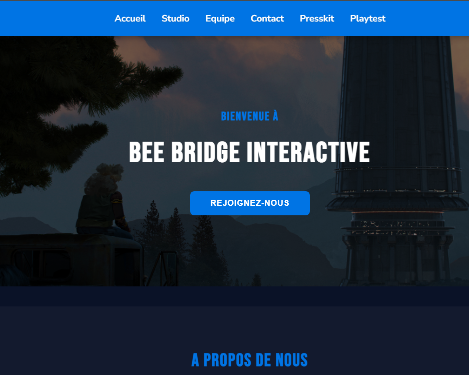
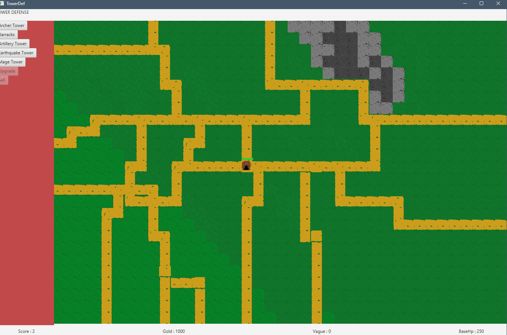
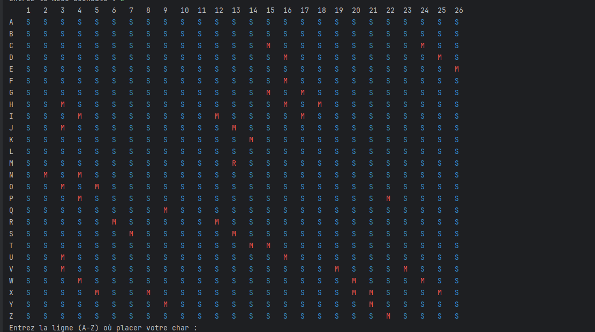

Ayoube
Manjal
Étudiant en 1ère année de BUT Informatique
Mes Compétences Essentielles
Parcours Réalisation d'applications : conception, développement, validation
Compétences du BUT Informatique
Mon parcours de formation s'articule autour de 6 compétences essentielles qui me permettent d'intervenir sur l'ensemble du cycle de vie d'une application informatique.
De la conception à la validation, en passant par l'optimisation et la gestion de projet, ces compétences garantissent une approche professionnelle et complète.
Mes 6 Compétences
Connaissances techniques
Compétences techniques acquises au cours de mes formations et de mes expériences personnelles.
Langages informatiques
Web
Base de données
Logiciel, Outil & OS
Mes Projets
Quelques unes de mes réalisations

Beebridge Interactive
Création d'un site web statique pour l'entreprise Beebridge Interactive. Mes missions : élaboration de l'architecture de la page, gestion du JavaScript et coordination de l'équipe.
Compétence : Conduire un projet
"Satisfaire les besoins des utilisateurs en respectant les règles juridiques et normes en vigueur."
Application : Lors de la création des identifiants des internautes, j'ai exigé au moins 12 caractères, comme préconisé par la CNIL.

Jeu de Tower Defense
Développement d'un jeu de Tower Defense stratégique avec une interface graphique en JavaFX.
Compétence : Réaliser
"Développer — c'est-à-dire concevoir, coder, tester et intégrer — une solution informatique."
Application : Conception de l'architecture objet avec des patrons de conception (Design Patterns) et intégration d'une interface graphique interactive fluide.

Tank War
Un jeu en ligne de commande (console) basé sur le principe de la bataille navale, développé en Java.
Compétence : Optimiser
"Proposer des applications optimisées en fonction de critères spécifiques : temps d'exécution, précision, consommation de ressources."
Application : Choix de structures de données optimales (matrices) et optimisation des algorithmes de traitement pour garantir un temps de réponse instantané.
Mon Parcours
Mon cursus scolaire & académique
BUT Informatique
IUT / Université
Apprentissage approfondi du développement logiciel, de l'algorithmique, des bases de données et des architectures réseaux. Développement d'applications en équipe et gestion de projets agiles.
Baccalauréat Général
Lycée
Parcours scientifique axé sur les mathématiques et les sciences du numérique, posant les bases méthodologiques et logiques nécessaires pour la programmation.